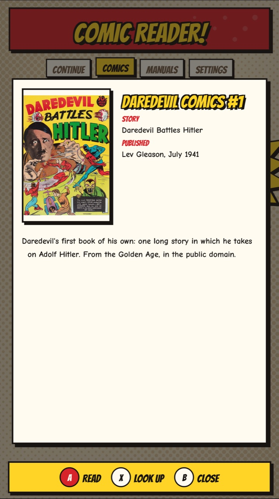

Comic Reader 0.2
The Guide!
Comics and manuals on your cabinet. Pages on the playfield, the cover on the backglass, where you are on the DMD.

PlayfieldYour library, then the pages.

BackglassThe book's cover.

DMDThe title and the page you're on.
ReadingTurn, zoom, read

The pageAs big as the screen: 2160 pixels wide on a 4KP. The title and page number show as it opens.

Page turnThe page curls over. Settings can make it a slide, or none.

ZoomStart: 2x, 3x, back. The joystick moves around; the text sharpens when you stop.
Next pages are ready before you get there: the app draws ahead while you read, so turning is instant. A scanned PDF takes longest, about a second a page.
Manga: Settings > Reading direction > Right to left swaps the flippers, so the left one turns forward. A book marked as manga in its ComicInfo.xml reads that way by itself.
B while zoomed shows the whole page again; B on the whole page goes back to the library. Your place is saved.
What's this book?Details

Press Y on a book in the library: its cover, series and issue, the story, who published it and when, the writer and artist, a summary, and how far in you are.
The details come from a ComicInfo.xml file inside the comic, the tag file most comic tools write. A book with one shows as "Daredevil Comics #1" in the library and on the DMD, not by its file name.
No ComicInfo?Look it up
- On the details, press X. The series and issue number are read from the name:
Jumbo_Comics_082.cbr is Jumbo Comics #82.
- It's looked up in the Grand Comics Database (comics.org), which knows the story, date, credits and what's inside.
- "Is this it?" A keeps it, X tries another series with that number, B drops it. Kept details stay in the app; your file isn't changed.

The cabinet needs the internet for this. comics.org allows a few dozen lookups an hour for each home; if it asks you to wait, it says for how long. Details: Grand Comics Database, CC BY-SA 4.0.
QuestionsFAQ
Which cabinets does it work on? It's made for the AtGames Legends Pinball 4KP and HDP: pages on the playfield, the cover on the backglass, the page number on the DMD. It works out which screen is which on each model by itself. Other Legends models haven't been tried.
What files can it open? PDF, CBZ, CBR (RAR) and CBT comics, single pictures (JPG, PNG, WebP, GIF, BMP, TIFF), and a folder of pictures as one book, its pages in name order. It can't open CB7, EPUB, or comics locked to a store's app (DRM).
Wi-Fi upload won't open on my phone. Check the phone or computer is on the same network as the cabinet, not a guest network or mobile data: some routers' guest networks keep devices from seeing each other. Type the address exactly as shown, including the :8080 part. A FAT32 stick can't take a single file over 4 GB.
Why is the first page of some books slow? Scanned PDFs are the slowest kind, about a second a page on a 4KP; CBZ and CBR pages take about a quarter of a second. While you read, the next pages are drawn ahead, so turning is quick after the first.
My book shows its file name, not its title. Titles and details come from a ComicInfo.xml file inside the comic. A book without one is named after its file: press Y for its details, then X to look it up in the Grand Comics Database. Keep the match with A, or try the next with X.
How do I update? Settings > Check for updates downloads the newest release and restarts into it. Coming from 0.1.0, which had no updater, copy 0.2.0 over by hand once.
Will updating or reinstalling lose my books or places? No. Updates replace only the app, its licenses and the guide; your books, reading places and settings are left alone. Places live in data/progress.txt on the stick; Settings > Forget reading history clears them.
A comic started reading itself. That's attract mode: after 5 minutes untouched in the library, random comics read themselves. Press any button to stop it. It doesn't count as reading. Settings > Attract mode sets 5 or 10 minutes, or off.
Something went wrong. The app keeps a log at
external/comic-reader/data/comic-reader.log on the stick, including a note if it crashes. Open an issue on
GitHub with the log and what you were doing.
More at bla1ze.github.io/comic-reader